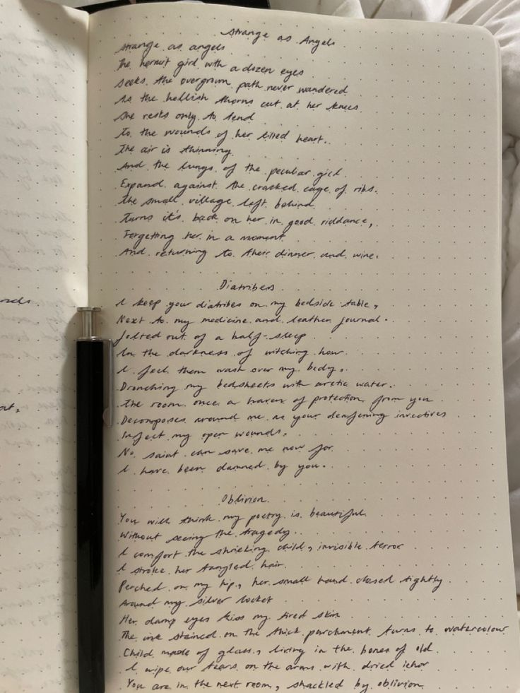
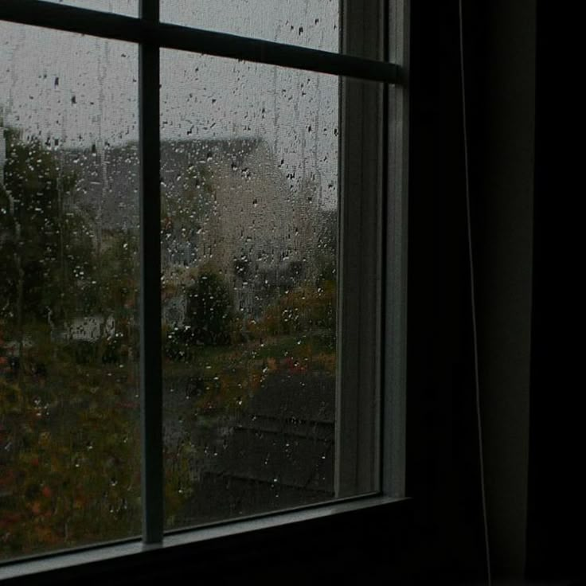
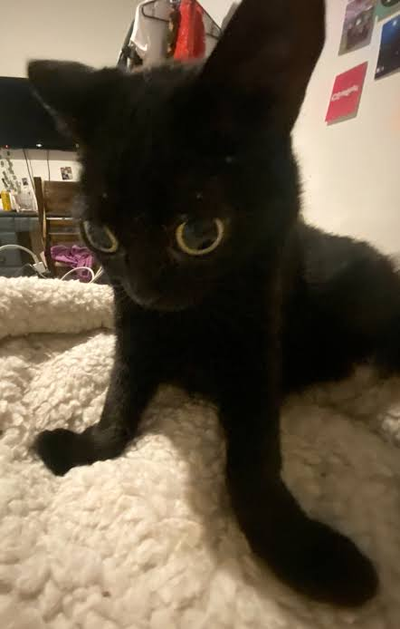

salut internet !!
Bonjour, internet. :)
Je m'appelle Adya, et bienvenue dans mon petit coin bizarre de l’internet.
En ce moment, il pleut dehors. Une tasse de thé refroidit lentement sur mon bureau...
mes écouteurs jouent une chanson beaucoup trop dramatique, et il est probablement beaucoup trop tard pour que je sois encore réveillée.
Mais honnêtement… la plupart des bonnes choses dans ma vie commencent après minuit.
Parfois, je pense tellement à quelque chose que ça devient presque philosophique… ou poétique.
Mes cahiers et mon application de notes sont remplis de pensées étranges, de phrases écrites à 2 h du matin, et d’idées qui semblaient très intelligentes jusqu’au lendemain matin.

Alors je me suis dit :Pourquoi ne pas créer un blogue ?
Honnêtement, je suis beaucoup trop paresseuse pour avoir publié un blogue toute seule. :’)
Si ma prof de français n’avait pas annoncé un projet final pour l’unité 4, ce site n’existerait probablement pas. Je serais probablement en train de relire un livre fantastique, d’écouter Hozier dans le noir, ou de regarder la pluie tomber contre ma fenêtre à la place.

Donc un week-end, au lieu de faire quelque chose de normal comme utiliser Google Sites, j’ai décidé de créer mon propre site « from scratch ».Je n’ai même pas vraiment recherché comment faire. :’)
J’ai juste ouvert Firebase parce que je savais déjà un peu comment ça fonctionnait… puis tout est devenu complètement hors de contrôle.
Quelques heures sont devenues quelques jours.
Puis beaucoup trop de lignes de code.
Puis des mini-crises existentielles à 1 h du matin.
Puis cette étrange petite forêt numérique où tu te trouves maintenant.
Maintenant, après plus de 5000 lignes de code...
 ... beaucoup trop de thé, et plusieurs moments où j’ai dû fixer mon écran comme une âme perdue, tu es officiellement sur mon blogue. :)
... beaucoup trop de thé, et plusieurs moments où j’ai dû fixer mon écran comme une âme perdue, tu es officiellement sur mon blogue. :)J’adore coder et construire des choses — des sites web, des applications, des robots, honnêtement n’importe quoi. J’aime comprendre comment les choses fonctionnent. Petite, je démontais mes jouets juste pour voir ce qu’il y avait à l’intérieur.
Certaines personnes grandissent et arrêtent d’être curieuses.
Moi, je suis simplement devenue plus dangereuse avec un clavier.
Mais j’aime aussi lire pendant des heures, écrire des pensées absurdes dans mes cahiers, écouter la pluie contre ma fenêtre, jouer de la flûte, et prétendre que les forêts cachent encore quelque chose de magique.
Ah, et avant que j’oublie :

Bonjour. Je m’appelle Adya.Je suis une fille au secondaire, et ce blogue est rempli de mes pensées, histoires, idées, poèmes et obsessions du moment.
Et pour rendre mes amies folles :
Mon MBTI est probablement INTP ou INFJ.
… ou ( actuellement plus ) INFP.
Ça change chaque semaine. :P
Mes amies disent que je suis une « overachiever », mais je ne suis pas vraiment d’accord. J’aime juste apprendre des choses complètement aléatoires et parler comme une grand-mère philosophe dans un vieux café à minuit.
Mais bon.
Merci d’être ici, dans mon petit univers rempli de pluie, de musique, de livres, de code, et de pensées beaucoup trop longues pour être écrites dans les notes d’un téléphone. ☆
---
une note et un question pour toi :
ce site est inspiré des vieux blogs internet, des jeux rétro et ma coleur préférée : le vert forêt, quel est ta coleur favourite ? ☆
( le question est sérieux, je veux vraiment savoir... Et si vous vous posiez la question, oui, j'ai mis deux photos de chats au hasard parce qu'elles étaient TROP MIGNONNES pour que je les laisse passer. )
actuellement obsédée par :
- ☆ les vieux blogs
- ☆ les forêts pixelisées
- ☆ les projets de code
- ☆ la coleur vert forêt (oui, je sais que je me répète.)
résumé / thème de mon blog :3
Ce blogue est un petit journal numérique rempli de réflexions nocturnes, de nostalgie internet, de pluie, de musique et de pensées personnelles. J’y partage mes expériences, mes idées et les petites choses qui rendent la vie étrange et belle à la fois.